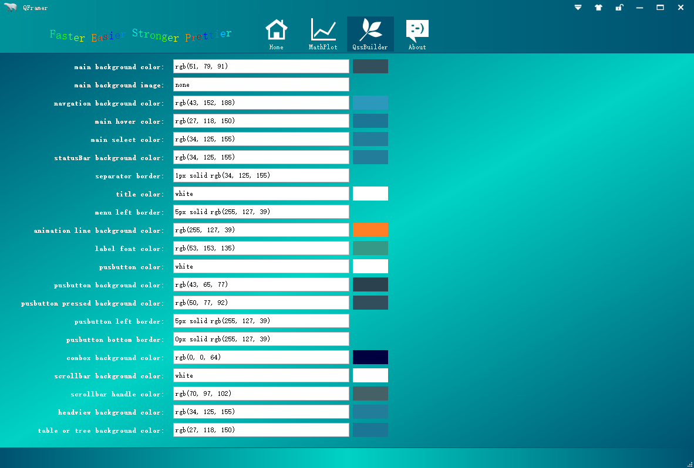
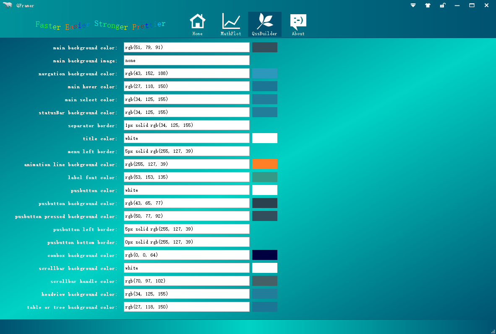

Qcframer
It's a solid frame based on Qt5.
Project maintained by dragondjf Hosted on GitHub Pages — Theme by mattgraham
QFramer
1.Introduction
It's a frame based on Qt5.3, you will be more efficient with it. As an Qter,Qt give us a nice coding experience.With user interactive experience(UE) become more and more important in modern software, deveployers should consider business and UE.So, QFramer is born. QFramer's goal is to be a mature solution which you only need to be focus on your business but UE for all Qters.
2. Support Qt version：
support Qt4.8 and 5.3, It works well with Qt4.8.6、Qt5.3.0 and Qt5.3.1.
3. Feature
-
custom titleBar: support logo, title setiings, skin, lock, maximumed, maximumed, close custom definition. -
custom navgationBar: support add custom navagation tab. -
custom SystemTray: support add custom SystemTray and add context menu to SystemTray -
custom fly window: support add fly window on desktop and add context menu to fly window -
custom leftside bar: support leftside navagtion for custom widget -
custom about page: support custom define about page -
custom skin: support custom ui skin by qss ......
4 Download
-
source:https://github.com/dragondjf/QCFramer/archive/develop.zip -
Realease: http://pan.baidu.com/s/1qWI2lXi
5: Snapshot

 

6.Contact
-
Email:ding465398889@163.com or dragondjf@gmail.com or 465398889@qq.com -
Github:https://github.com/dragondjf/QCFramer
If this framework id helpful to you , please add a star